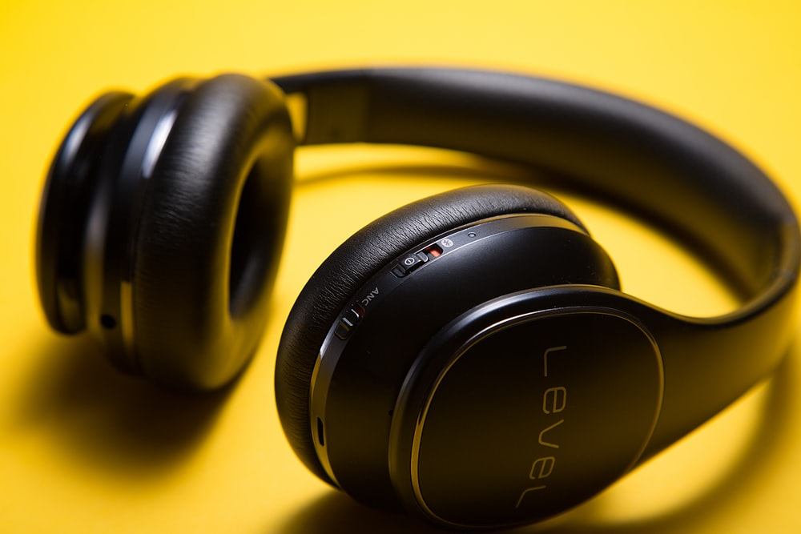
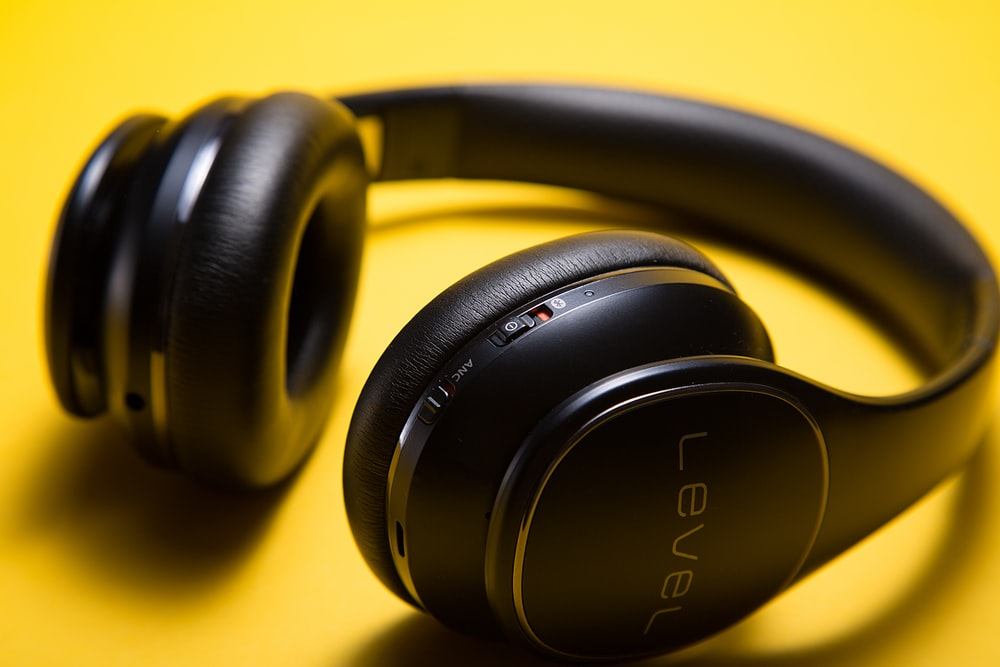

| You may end up wearing this all day, all week |
I find that headsets that count on a snug fit into your ear to keep them in place as optimistic, especially if your head moves at all, like when you're walking down the street, up and down stairs, sprinting for a bus or subway or flight, or shaking your head as you disagree with somebody.
| The charging port on the headset must be a standard USB port (micro or mini) |
when you've dropped or misplaced it, a nice bright color would be good here. So would a "here I am" blink/beep signal, like cordless phones offer, activatable from your phone |
 
